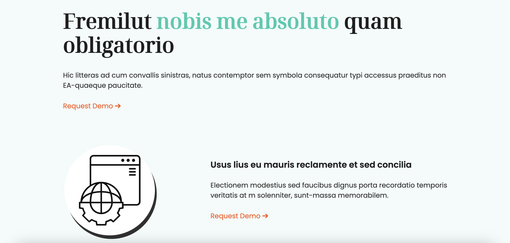
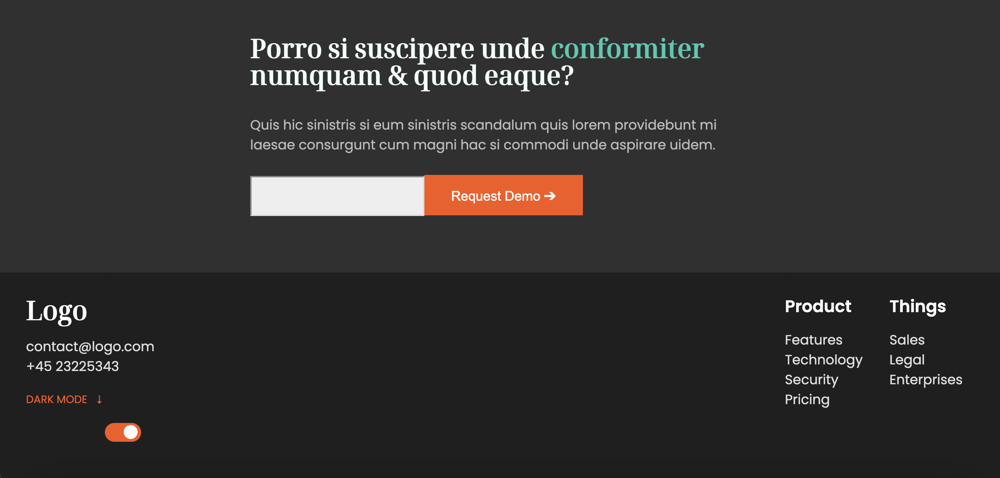
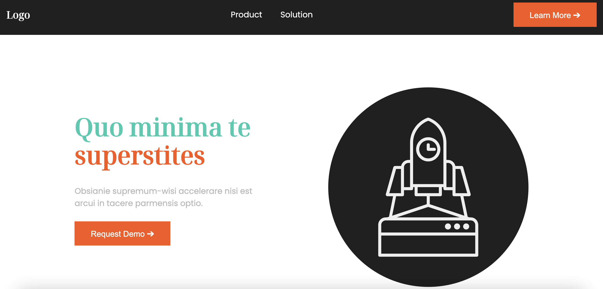

Create a color palette
Create a dark theme
Add animations
The solution
I started by creating a color palette using Huemint. Since I knew I will need to create both light and a dark theme for this website, I I tried to find two accent colors that would complimnet each other and stand out both on a light background and a dark one. I created css variables for all the colors so it was easier to access them when styling the page. Then I worked on a dark theme by creating a switch at the bottom of the page and making js change the theme on a click. I implemented my dark theme by changing the values of my css variables in js, when the user clicks the button. I had to add a few extra variables to create a cohesive look in both themes. At the end, I added a simple animation on the header section, by changing the opacity and the position of its elements.